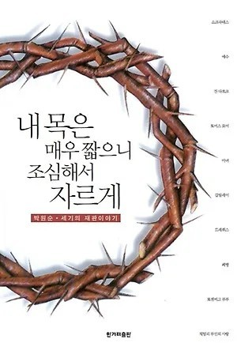
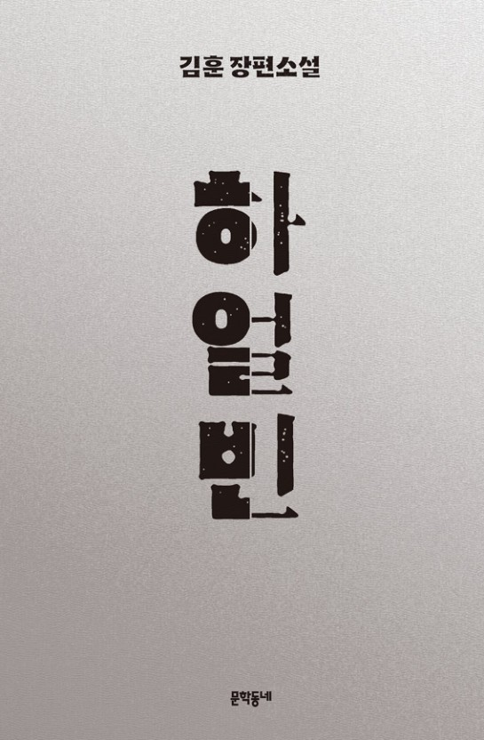
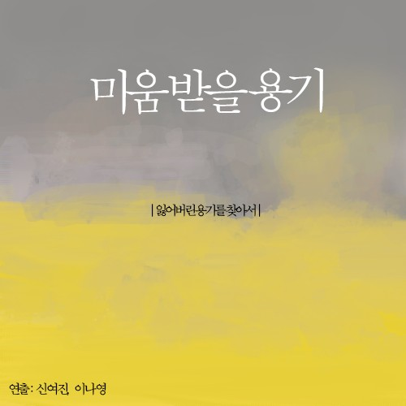

내 목은 매우 짧으니 조심해서 자르게 |
살아가며 내 인생의 모토가 될 수 있는 책을 찾는것은 매우 어려운 일이라 생각한다. 나는 평소 철학적 내용이 담긴 책을 좋아하는데, 그것은 단순히 '재밌어서'나 '내 스펙에 도움이 되어서'따위가 아닌,사람과 더불어 살아가는 방법, 더 속깊게 말하는 방법, 타인을 배려하는 방법 등 인생을 살아가는 방법을 과거 도인들을 통해 배울 수 있기 때문이었다. 이 책은 당대의 모순들에 대항하여 억울하게 사라져버린 위인들에 대하여 그들의 업적과 함께 그들의 명예를 복권시키고, 이로인해 우리가 살아가며 품고가야하는 정신이 무엇인지 알려주고자한다. 죽음과 신념이란 무엇일까? 죽음이란, 살아가는 모든 것의 마지막이자 불평등한 이 사회에서 유일한 평인이라 할 수 있을 것이다. 인간이란 누구나 죽음에서 벗어나고 싶은 원초적인 본능이 있다. 살아가기 위해 배고픔을 느끼고, 고통을 느끼며 안정을 얻기 위해 끊음없이 정진하고, 변화하는 것이다. 이러한 죽음 앞에서 자신의 신념을 고수하는 것이 과연 가능할까? 나는 대부분의 사람들이 불가능할 것이라고 생각한다. 하지만, 이 책에서 나오는 위인들은 자신들의 신념을 죽음이란 존재에 대해 타협하거나, 부정하지 않고 끝까지 자신들의 신념을 이어나갔다. 당시엔 인정받지 못한 신념이더라도 그들은 죽음 이후에라도 그들의 명예를 얻었고, 자신들의 신념을 증명시켰다. 내게 있어 가장 기억에 남는 재판은 소크라테스의 재판이였다. 소크라테스라 하면 '악법도 법이다'라는 말을 가장 먼저 떠올리는 사람들이 있을텐데, 이는 잘못된 사실이다. 이는 일본의 오다카 도모오의 '법철학'이라는 책에서 실정법주의를 강조하며 잘못 차용된 것이다. 소크라테스의 재판이 이루어진 것은 그리스의 내전인 펠로폰네소스 전쟁이 끝난 시점인데, 이 당시 전쟁에서 패배한 아테나는 민주주의 세력이 정권을 잡게 되며 귀족주의 정치탄압의 희생양으로서 소크라테스가 선택된 것이다. 소크라테스의 죄명은 '젊은이들을 타락시킨 죄'였는데, 당시 소크라테스는 아테네가 지향하던 전통적인 사회 가지나 사상, 철학등을 전파하였는데, 이는 당시 민주주의 세력이 아테네 정권을 잡았었기 때문에, 당시 아테네의 정치 이념과는 맞지 않았던 것이다. 재판에서 무죄방면의 조건으로 철학을 탐구하지 않겠다는 조건을 걸었기에 소크라테스는 철학적인 삶을 끝까지 지키며 죽음을 선택하려 한 것이다. 소크라테스가 감옥에서 사형 집행을 기다리는 동안 소크라테스의 친구인 크리톤이 찾아와 간곡히 탈옥을 권했지만, 소크라테스는 "그저 사는 것보다 훌륭하게 잘 사는 것이 중요하다. … 설혹 상대가 자신에게 올바르지 못한 행위를 했더라도 앙갚음으로 올바르지 못한 행위를 해서는 안된다. 어떤 일이 옳다고 동의한 것은 반드시 지켜야 하므로, 내가 지금 탈옥하는 것은 남에게 해를 끼치는 부정의이다." 죽음이라는 것은 그 누구도 알지 못하는 미지의 영역임이 분명하다. 나는 죽음이라는 미지의 영역에서 소크라테스처럼 행동할 수 있을까? 인생에 살아가며 나는 어떤 산념을 가져야하는가? 소크라테스의 재판은 내게 있어 삶의 뱡향성을 제시해주는 재판 중 하나였다고 생각한다. 이 책에는 소크라테스의 재판 뿐만 아니라 드레퓌스나 토머스 모어, 잔다르크와 예수 등 많은 위인들의 재판을 볼 수 있다. 이 책을 읽으며 나는 나에게 '내가 정말 온전히 나로 살고있는가'란 질문을 끊임없이 하였다. 나로서 살고 나를 잃지 않는 것은 생각보다 쉬우면서도 절대 쉽지 않다. 책의 위인들의 재판 내용을 읽으며 나에대한, 그리고 세상에 대하여 끊임없이 질문하고 대답하며 책을 읽다보면, 내게 가장 필요한 깨달음을 책이 전달해주는 것 같다는 느낌을 받았다. 그렇기에 이 글을 읽는 사람들에게 이 책을 한번쯤은 읽어보라 감히 추천하고싶다. |
하얼빈 |
'하얼빈'은 안중근 의사의 짧지만 강렬했던 그의 일생을 다루는 소설이다. 안중근 의사는 대한민국 역사에 영원히 남을 대한민국의 영웅이다. 하지만 안중근 의사 역시 나라의 영웅이기 이전에 대한민국에서 살아가던 어린이였고, 청소년이였으며, 성인이였고, 국민이였으며, 독립운동가였다. 소설 '하얼빈'은 나라를 위해 목숨을 바쳐 싸워가던 대한민국의 영웅 뿐만 아닌, 당대를 살아가던 인간 '안중근'도 있다는 점에서 가치있는 소설이라 판단하였다. 무게감있으면서도 가벼운 소설의 필체가 내용과 잘 어울리고, 대담하면서도 덤덤하고 잔잔한 전개는 마음에 깊은 울림을 준다. 알아두어야하는 것은 '하얼빈'은 김훈이 작가가 안중근 의사의 일생을 써나가기 위해 안중근 의사를 나아가 인간 안중근을 깊이 탐구하고 쓴 내용이다. 즉, 안중근 의사의 일기같은 것이 아닌, 김훈이 작가가 안중근 의사를 공부하고 이해해나가며 써나간 즉, 철저하게 김훈이 작가의 상상으로 구성된 소설이라는 점이다. 소설을 읽으면, 작중 안중근 의사의 인간적인 모습이 많이 나오게 된다. 그는 대의를 위해 나서는 용감한 젊은 청년이였으며, 집안의 장남이자 한 가정을 이끌어가야하는 가장이였고, 세례까지 받은 천주교의 신앙인이였다. 그렇기에 작중 대의를 위해 희생하려다가도, 집안의 장남이라, 가정의 가장이라, 천주교 신앙인이라, 죽음을 두려워하는 하나의 인간이라 수시로 고민하고, 머뭇거리던 장면이 굉장히 인상적이였다. 위에 적은 '내 목은 매우 짧으니 조심해서 자르게'라는 책과 같이 나는 죽음 앞에 나의 신념을 지키는 것은 매우 쉬우면서도 어렵다고 기술하였다. 이 책은 신념을 지키는 것을 넘어서 안중근 의사가 자신의 신념을 지켜가는 과정에서 고뇌하고, 두려워하며, 끝없이 자신에게 질문을 하면서도 결국에는 자신의 신념을 지키고, '나로서'살아가는 것이 매우 인상깊었다. 또한, 당대 일제의 잔인함이나 극악무도함을 소설적 표현으로 아주 잘 써주어서 깊게 몰입하며 읽었다. 또한, 이 책에서 유심히 읽어야 하는 부분은 개인적으로 안중근 의사와 이토의 갈등도 갈등이지만, 빌렘 신부와 뮈텔 주교의 갈등이라고 생각한다. 빌렘신부는 안중근에게 세례를 준 신부님이고, 뮈텔 주교는 한국 교회를 통솔하는 인물이다. 안중근 의사가 사형 선고를 받고 사형을 집행하기 전, 신에게 자신의 죄를 빌고자 하였을 때, 빌렘 신부는 안중근 의사에게 고해성사를 베풀어주려하는 반면에, 뮈텔 주교는 한국에서 겨우 자리를 잡게 된 천주교가 안중근 의사에게 고해성사를 해주게 되면 한국에서의 위치가 흔들리게 되는 것이 두려워서 빌렘의 뜻에 반대하게 된다. 소설은 천주교의 뜻에 맞게 한 사람을 구원하고자하는 빌렘 신부와, 오직 대학민국에서의 천주교의 아뉘를 걱정하여 역설적으로 세속과 결탁하게 되는 뮈텔 교수가 서로 대치하게 되며 더욱 풍부한 대립구도를 만들어준다. 또한 결국 빌렘 신부는 뮈텔 교주의 권력에 굴하지 않고 안중근 의사를 만나 안중근 의사에게 고해성사를 해준다. 안중근 의사가 고해성사를 하며 평온을 찾아가는 장면은 다시 보아도 강렬하고 짜릿한 감각을 선물한다. 나는 내가 대단한 사람이라 생각하지 않는다. 이들처럼 거대한 세력에 맞서 나의 신념을 유지할만한 강단도 내게는 없다고 생각한다. 하지만 이 책을 읽으며 대한민국의 역사를 더 깊이 알게 될 뿐만 아니라 이들처럼 거대한 사람이 되지는 못하더라도 내가 살아가며 어떠한 정신으로 살아가야 하는가에 대해서 생각하며 읽은 책이라 나와 같이 삶의 방향성에 대해 고민하고있거나, 대한민국의 역사에 대해 아는 것 뿐만 아니라, 우리나라의 과거에 감정을 대입하고 읽어보고싶은 사람들에게는 이 책을 매우 추천한다. |
미움받을 용기 |
미움받을 용기는 비관적이고, 부정적이고, 심심치 않게 자기혐오를 하는 한 청년과 아들러의 심리학을 평생 연구한 철학자의 대화로
이루어져있는 내용이다. 청년은 아들러의 심리학을 평생 공부해온 철학자가 우습다 생각하며 철학자의 집으로 찾아가 철학자의 생각에 반박을한다. 그렇기엔 청년은 계속하여 암울하고, 어둡고, 비관적인 이야기를 한다. 이에 철학자가 그에 맞는 대답을 하면 그를 이기기 위해 계속하여 반박을 하며 토론을 하게 된다. 여기서 아들러의 개인심리학이란, 인간은 성적인 만족감보다는 우월감을 추구하면서 우월감은 다른 사람에 대한 열등감에서 비롯된다고 여긴다. 또한, 아들러는 한 사람이 가지고 있는 바람직하지 못한 생활양식을 보다 긍정적인 관점으로 변화시키고 한 사람이 사회에 대해서 가지고 있는 관심을 발달시키면서 보다 나은 생활양식을 제시하고 연구 및 개발할 것에 중점을 둔다는 것이다. 청년과의 대화를 통해 알 수 있는 철학자의 말의 요지는 '세상의 모든 문제와 스트레스는 인간관계로부터 시작되며, 인간관계가 문제가 되는 이유는 스스로 미움받을 용기가 없기 떄문이다'이다. 인간은 누구나 미움받고 싶지 않아한다. 인간은 사회적 동물이기 때문에 사회에 녹아들어 안정적으로 살고싶어한다. 그렇다면, '미움받을 용기'는 어디서 나오는 것일까? 이 이야기를 하려면 아들러의 목적론에 대해서 알아야한다. 아들러의 목적론이란, 어떤 목적에 따라 내가 그 목적에 맞추어 생각하고, 행동한다는 것을 의미한다. 즉, '안좋은 기억'은 그것 자체가 안좋은 기억인 것이 아니라, 내가 그 기억에 어떤 의미를 부여하느냐에 따라서 '좋은기억'이 될 수도 있고, '나쁜기억'이 될 수도 있다는 것이다. 청년은 지속하여 자신이 성공할 수 없는 이유에 대하여 설명한다. 철학자가 말하고자 하는 것은 청년이 성공하지 못하는 것은 어떠한 이유가 있기 때문이 아니라 그저, 내가 성공하기 싫기 때문에 지어낸 감정들이라는 것이다. 그렇가면, 미움을 받기 위해서는 어떠한 준비가 되어야할까? 먼저 첫째로, 자기 수용의 마음가짐을 가져야한다. 이 자기 수용은 '나는 무엇이든 될 수 있어!', '나는 대단하고 멋있는 사람이야!'따위의 것이 아니라, 나의 부족한 점, 나의 고칠 점 등 나를 성찰하고, 앞으로 나아갈 수 있는 준비를 하기 위해 나를 받아들이는 것을 말한다. 두번째로는 타인을 신뢰하는 마음가짐을 가져야한다. 타인을 나쁘게 생각하지 않고, 끝까지 신뢰하는 마음가짐을 가져야 한다는 것이다. 마지막으로는 타자 공헌의 마음을 가져야한다. 타자 공헌이란, 나만을 챙기고 나의 이득만을 탐하는 것이 아닌, 타인을 위해 일하고, 타인을 도우며, 타인을 생각하는 마음가짐을 가져야한단 것이다. 내가 이 책을 읽으며 가장 마음이 간 구절은 이 구절이다. "자네도 나도 세계의 중심이 아니야. 내 발로 인간관계의 과제에 다가가지 않으면 안되네. '내가 이 사람에게 무엇을 해줄 수 있을까?'를 생각해야지." 이 책을 읽고 나는 내가 평소 철학책을 많이 읽고, 철학공부를 많이 하였어서 내가 철학에 관해서 조금은 안다고 '착각'했었다. 하지만, 이 책을 읽고 많은 것을 느끼고 배웠다. 나는 '미움받을 준비가 되어있나?'라는 질문을 스스로에게 던져보았을 때, 자신있게 '되어있다.'고 단언할 수 없었다. 나는 사람을 좋아한다. 사람을 좋아하는 것 만큼 미움받는 것은 무섭다. 이 책을 읽고나서도 사람에게 미움받는 것은 무섭다. 하지만, 다른 사람에게 미움받을까 겁내고, 두려워하고, 나와 타인을 비교하고, 세상을 비관적으로 살 것이 아니라 내가 어떻게 살아가야하는지에 대해서는 조금을 알게되었다. 내가 얻고자 하는 것이 있다면, 타인이 내게 오길 기다리는 것이 아니라 내가 먼저 다가가고, 내가 먼저 행동해야한다는 것이다. 책에서 나왔던 것처럼, 사람들은 나를 중심으로 돌아가지 않는다. 즉, 필요한 것이 있거나 해야할 일이 있으면, 내가 먼저 다가가고 내가 쫓아가야 한다는 것이다. 사회를 나가기 전, 한번쯤은 이 책을 더 읽어봐야겠다고 생각하였다. |
감사합니다.